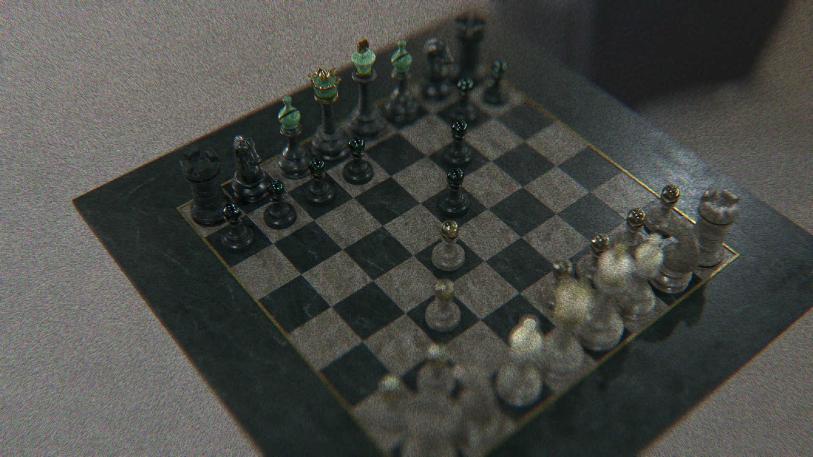
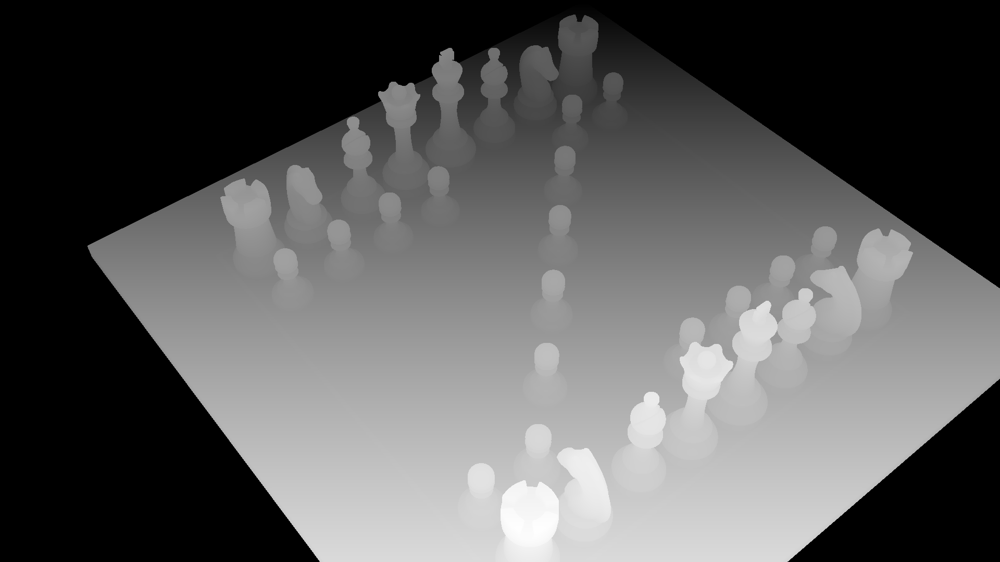
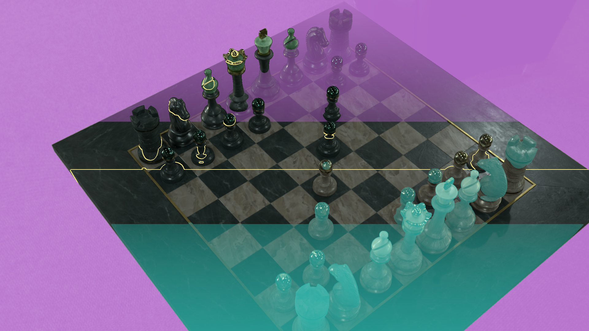
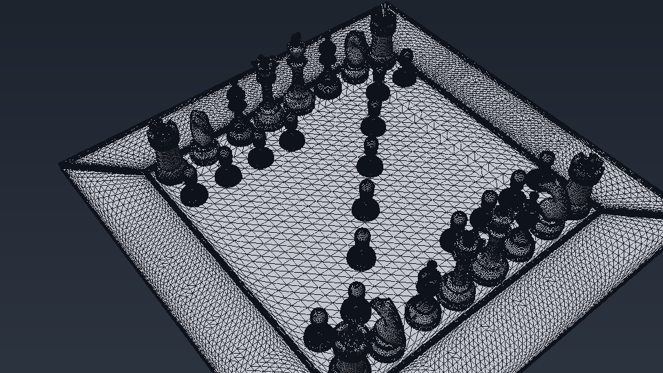
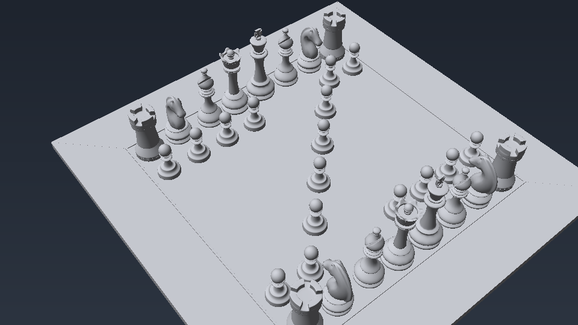
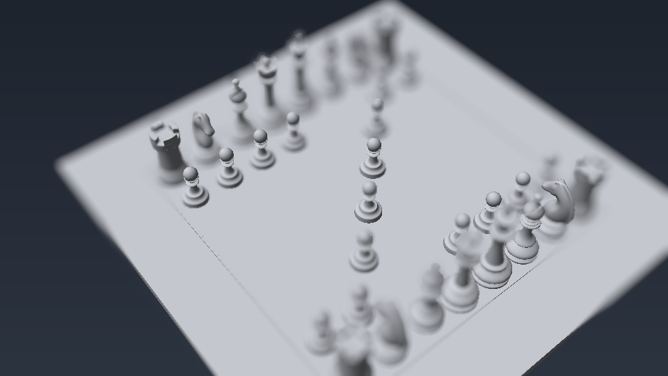
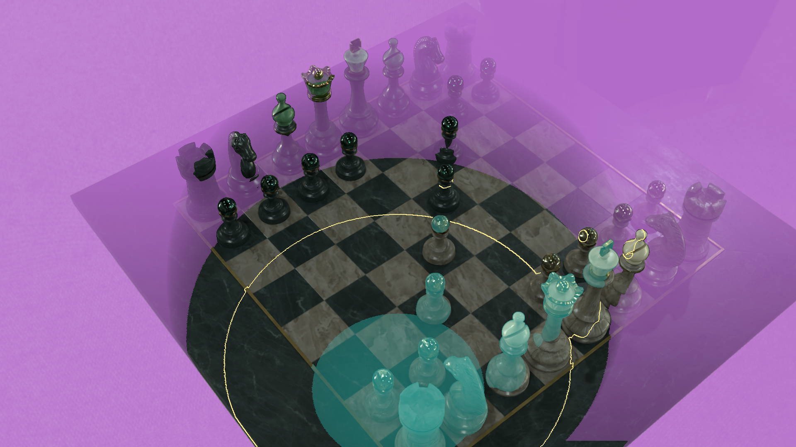

Real-Time OSL Shader Comparison & Render Lab
Organize, blend, and compare genuine OptiX and OSL render passes in logical sequence across multiple shot samples — featuring multi-wipe curtains, synchronized matrices, and A/B diffing.
Multi-Style Layer Stack (Ordered Passes)
Stack, blend, solo, and scrub through the active sample's render passes in exact pipeline order.
Layer Compositing Deck
Press keys 1, 2, 3, 4... on your keyboard to instantly solo any passDrop Images Here to Populate Active Sample
Drag and drop image files (or click to browse). They will populate the active sample layers in order.
Interactive A/B Comparison
Drag the slider bar or click anywhere to reveal shader variations between two passes.


Test Custom Renders Locally (A/B Pair)
Drag & drop any two render files below (PNG, JPG, WebP) to test them live in the comparison viewer without leaving your browser.
Or click to browse local file
Or click to browse local file
Video Demonstration & Shader Breakdown
Watch dynamic shader attributes, lighting response, and camera rotation in motion.
OSL Shader Execution & Lighting Response
Full demonstration of the Open Shading Language custom shader evaluation, showing ray-traced reflections, subsurface approximation, and procedural texture displacement.
Project Passes Gallery (Multiple Samples)
All project passes organized in chronological render pipeline order across distinct samples.
Sample Set 1: OptiX Ray-Tracing Pipeline
Numerical progression: Depth Buffer → DOF Debug → Raw Shading → Post-Processed Final (1920×1080)
Render04 — Z-Depth Buffer Pass
Depth pass used for atmospheric fog, distance culling, and camera depth-of-field.

Step 2: DOF DebugRender05 — Depth of Field Debug
Visualizing lens circle of confusion, focal plane, and aperture blur response.
Render07 — Raw Ray-Traced Shading
Direct un-tone-mapped output from the OptiX ray-tracing pipeline core.
Render08 — Final Post-Processed Render
Final beauty frame with tone-mapping, color grading, and lens effects.
Sample Set 2: Viewport Flat Shading
Chronological progression: Angle A → Flat Base → Flat Post-Processed (960×540)

Step 1: Flat Angle ARender01 — Flat Shaded (Angle A)
Initial viewport geometric shading angle.

Step 2: Flat Base BRender02 — Flat Shaded Base (Angle B)
Raw viewport geometry and albedo without tone-mapping.

Step 3: Flat Post BRender03 — Flat Post-Processed (Angle B)
Post-processed flat viewport shading with edge clarity.
Sample Set 3: OSL Shader Benchmark
Chronological progression: Baseline Ground Truth → Custom OSL Shading (1920×1080)

Step 1: BaselineRender06 — Baseline Ground Truth
Ground-truth reference render used to benchmark OSL shader modifications.
 Step 2: OSL Beauty
Step 2: OSL Beauty
Render After — OSL Beauty Shading
Final procedural OSL shader evaluation with micro-surface specular response.
Architecture & Technical Highlights
Engineered for high performance, accuracy, and pipeline flexibility.
1:1 Subpixel Accuracy
Zero optical distortion. All layers are anchored at true native resolution with hardware-accelerated clipping polygons.
Ordered Multi-Sample Stacking
Organize passes into logical shot samples with instant scrubber interpolation, multi-wipe curtains, and keyboard hotkeys.
VFX AOV & Diff Inspection
Difference blending reveals mathematical deviations between passes, ideal for regression testing shader revisions.
Pipeline Ready
Fully compatible with Maya, Houdini, Arnold, OpenUSD, MaterialX, and automated CI render verification scripts.